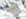

-
Join the GenServer Discord
[英:Goblin forest]
面積:未計測
気候区分:亜熱帯
土木:GEN3987
[生息する生物]
・ゴブリン
・ゴブリンメイジ
生物多様性の低い広大な亜熱帯の森。
ゴブリンやその亜種のゴブリンメイジなど、
比較的同じ科の生物が支配している。
ナンベイオオブナやヒノデプラタナスなど
巨大な樹木が多く生えている。
また、地形はかなり平面でいわゆる安定大陸だ。
かつてクコンポニという零細文明があった場所としても知られ、
現在は呻男の遺跡として度胸試しに訪れる人がいるが、
行方不明者もいるので度胸試しは控えるようにと
政府は警告している。
[英:Kucomponi ruins]
面積:未計測
気候区分:---
建築:GEN3987(設定としてはクコンポニ人作)
システム:GEN3987
[生息する生物]
・ゴブリン
・ゴブリンメイジ
・オーガ(?)
ゴブリンの森深部にある旧クコンポニ文明の遺跡。
ゴブリンやゴブリンメイジが住み着いており、
もはや訓練場として使われている。
近頃は度胸試しに訪れる人がいるが、
行方不明者もいるので度胸試しは控えるようにと
政府は警告している。
絶滅危惧種であるオーガが封印されているとも
言われており、 挑みに行ったが
帰って来ない事件が毎年数件出ている。
[英:Romue desert]
面積:未計測
気候区分:乾燥帯
土木:GEN3987
[生息する生物]
・サボティーン
・サソリ
古来から砂に覆われていた巨大な砂漠。
サボテンが多く生息しており、
初めて見つかった半動半植物もこの砂漠が生息地だ。
深部には高い山々がそびえ立っており、
その麓にヒャノルド公国やヒャノルドのピラミッドがある。
生物もかなり特殊で、肉食生物であるヴァル属など
少量の水分のみでも生き延びられるように進化した
砂漠に適応した生物も多い。
稀にあるオアシスの周辺には村がよく栄える。
最近は砂漠が広がっているという報告もあり、
このまま広がれば周りの生態系に
大きな影響が出ることが懸念されている。
[英:Principality of Hyanold]
面積:未計測
気候区分:乾燥帯
建築:GEN3987,Rinrin.rs
ロームエ砂漠にそびえ立つ山の麓にある公国。
最近開国したばかりで、それまでは外交が皆無であった。
南東にピラミッドがあり、アルヴァイルという生物が
幽閉されていると伝承されている。
また、建築技術はかなり高く、複雑な形状の主城や
フュード教会はウネフコ世界文化遺産に登録されている。
近頃は砂嵐による被害が後を絶たないほか、
深刻な水不足などと課題はまだ多い。
[英:Pyramid of Hyanold]
面積:未計測
気候区分:---
建築:GEN3987
システム:GEN3987
[生息する生物]
・アルヴァイル(?)
ロームエ砂漠にそびえ立つ山の麓にあるピラミッド。
ピラミッド内には多くの仕掛けや迷宮が広がっていて、
「旅人の墓場」とも言われている。
生物もほとんどいないが、アルヴァイルという生物が
幽閉されていると古くからヒャノルド公国にて伝承されている。
またピラミッド周辺の気温に比べて内部は涼しい。
なぜ気温に干渉されないかは未だ解明されていない。

[英:Domysaell Snowfield]
面積:未計測
気候区分:寒帯
土木:GEN3987
[生息する生物]
・アイスオロジャー
雪が降り積もる広大な雪原と山岳地帯。
木々は無く水場も少なくあったとしても凍っていることが多い。
雪原には観光地であるカドミバ温泉ランドがあり、
そこまでは道が整備されている。
しかし、奥地には複雑な山岳地帯が広がっているほか、
アイスオロジャーなどの戦闘民族が潜んでいる。
近年は雪原側での開発が進んでおり、
新たな娯楽施設を建設するなどのプロジェクトもある。
[英:Kadomiba Onsen Land]
面積:未計測
気候区分:---
建築:GEN3987,Rinrin.rs
ドミサエル降雪地帯にある唯一の熱水泉を中心に栄えている温泉街。
年中満開の桜や幻が見えるカフェなどもあり 毎年多くの観光客が訪れる。
昔ながらの建築物が多く 世界遺産の1つである天守閣カドミバ顎湯帝国城があるのもこの温泉街である。
カドミバ顎湯帝国城は 旧カドミバ顎湯帝国時代に建てられたものであり、
現在はエレベーターも設置され カドミバ温泉ランド運営機関が管理している。
また、楽しいスタンプラリーも常設されている。
しかし、この温泉街には 名物の顎湯しか温泉が無い。
[英:Nitro Headquarters]
面積:検閲により削除されました。
気候区分:---
建築:Rinrin.rs,GEN3987
土木:Rinrin.rs
[生息する生物]
検閲により削除されました。
検閲により削除されました。
